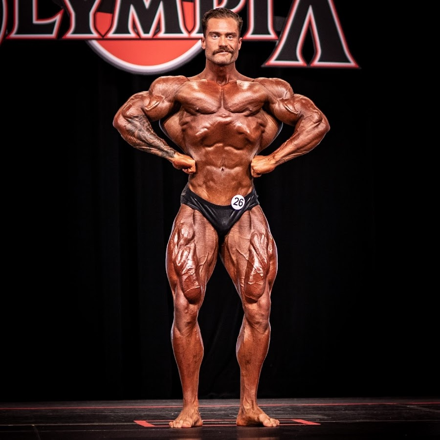

Biografi
Hej
Mit navn er Martin jeg kan lide protein og tunge vægte.
I min fritid træner jeg fitness og fester. Mine yndlingsfag er Matematik og naturfag,
det er derfor, jeg har valgt Mat-Fys studieretningen. Når jeg bliver voksen vil jeg gerne være multimillionær.